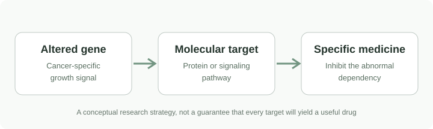

Cancer's old Achilles' heels
The chapter begins with the Greek story of Achilles, whose body was protected everywhere except one vulnerable heel. A single well-placed arrow could defeat someone otherwise almost invincible.
Mukherjee uses this story to explain drug discovery. A successful cancer treatment must find a vulnerability that can be attacked without causing intolerable damage to the rest of the body.
Before the 1980s, cancer medicine mostly exploited two vulnerabilities:
- Many cancers begin in one location. Surgery or radiation might eliminate them before they spread.
- Many cancer cells divide rapidly. Chemotherapy could interfere with DNA synthesis or cell division.
These were important insights, and they saved lives. But neither approach was perfectly selective.
A tumor that had already metastasized could not be removed by simply cutting more tissue. Chemotherapy that attacked cell division also harmed normal tissues that needed to divide—especially bone marrow, gut lining, and hair follicles.
Why 'more treatment' had stopped being enough
Aggressive surgeons once hoped that larger operations would cure more cancers. Later, aggressive chemotherapists hoped that stronger doses and additional drugs would achieve the same goal.
Both approaches encountered a biological ceiling. Normal life depends on cellular growth, too.
Imagine trying to destroy weeds in a garden using a chemical that poisons anything green. The weeds may die, but so may the flowers and young trees. Increasing the chemical dose does not make it more precise.
The new problem was therefore not merely to discover a stronger poison. Scientists needed to find differences between cancer cells and healthy cells that were specific enough to exploit.
Three new kinds of vulnerability
Research on genes and cellular pathways suggested new targets:
| New vulnerability | Why it matters |
|---|---|
| Driver genes | Mutations can switch on growth-promoting genes or disable protective ones |
| Overactive signaling pathways | A tumor may depend heavily on a pathway stuck in the 'on' position |
| Acquired cancer behaviors | Tumors can become dependent on survival signals, blood-vessel growth, or other abnormal capabilities |
The important idea is dependence. A tumor may rely on a particular abnormal signal far more than neighboring healthy tissue does. Blocking that signal might hurt the cancer disproportionately.
This was not a guarantee of harmless treatment. Every pathway exists in a larger living system. But it created the possibility of greater selectivity.

An unusual leukemia: APL
Mukherjee introduces acute promyelocytic leukemia (APL), a rare and dangerous leukemia recognized as a distinct condition in the mid-twentieth century.
The problem in APL was not only that abnormal cells multiplied quickly. They also failed to mature. The bone marrow filled with promyelocytes, immature cells that should have progressed toward functional white blood cells.
The author makes the distinction memorable: in many cancers, cells refuse to stop growing; in APL, they also refuse to grow up.
This immaturity could have dangerous consequences. Promyelocytes contain granules with substances that can disrupt normal blood processes, and APL was associated with severe bleeding complications.
The striking abnormality suggested a different question: what if doctors could persuade these cells to mature, rather than simply poison them?
The idea of differentiation therapy
Differentiation means a developing cell becomes more specialized and mature. Normal immature blood cells follow an orderly program of development.
In APL, that process becomes blocked. Researchers wondered whether a chemical could remove the block.
Imagine a school where students keep arriving in the same class but never graduate. The building fills with immature students while society receives no trained workers. One response would be to close the school. Another would be to repair the graduation process.
The second strategy resembles differentiation therapy: restore the cell's ability to mature so that the abnormal population no longer behaves as a relentlessly expanding group of immature malignant cells.
The puzzle of retinoic acid
Researchers had noticed that retinoic acid, a substance related to vitamin A, could sometimes cause APL cells to mature in laboratory experiments.
But the results seemed unreliable. Some preparations worked, while others barely worked at all. Without a consistent response, researchers could not build a dependable treatment.
Retinoic acid exists in forms whose atoms are connected in similar ways but arranged differently in space. These different arrangements can change how the molecule interacts with cellular proteins.
The distinction became crucial: cis-retinoic acid and trans-retinoic acid were not biologically interchangeable.
A collaboration between Shanghai and Paris (1985)
In 1985, a Chinese team led by Zhen Yi Wang visited Laurent Degos, a hematologist in Paris. Both groups were frustrated by the limitations of conventional APL chemotherapy.
They considered whether earlier research had tested the wrong form of retinoic acid, or preparations containing varying amounts of the effective form.
Wang could obtain relatively pure trans-retinoic acid from a factory near Shanghai. He would test it in patients at Ruijin Hospital. The French team would later investigate the approach as well.
This is an important example of scientific collaboration. The idea crossed international borders, and practical access to a chemical made a decisive experiment possible.
The 1986 experiment changes the story
Wang began a clinical study in 1986 with 24 patients. The book reports that 23 responded.
Under the microscope, immature promyelocytes began changing toward more mature white blood cells. After maturing, the abnormal cells eventually died and the malignant population diminished.
This was radically different from merely overwhelming the marrow with a conventional cytotoxic poison. The medicine appeared to change the developmental behavior of the cancer cells.
The response was not completely risk-free. Rapid maturation could produce dangerous physiological changes, requiring medical management. But the initially described adverse effects also included relatively modest symptoms such as dry lips or rash.
Important: a dramatic response in 23 of 24 patients is not the same as 23 permanent cures. The early remissions were often temporary.
Combining the new drug with chemotherapy
APL frequently returned after trans-retinoic acid alone, sometimes within a few months.
Wang and Degos therefore combined the maturation-inducing drug with established chemotherapy agents. In the book's account, this extended remissions substantially.
By 1993, their teams concluded that approximately 75% of patients receiving the combined approach could remain free of relapse over the observed long term—an extraordinary historical improvement for APL.
This illustrates a recurring lesson: a new selective strategy does not always replace older treatments. Sometimes the best progress comes from combining approaches with different mechanisms.
The gene explanation arrives after the treatment
Now the story takes an unexpected turn. Researchers found the medicine before fully understanding why it worked.
Janet Rowley had identified a characteristic chromosomal rearrangement in APL involving chromosomes 15 and 17. It produced an abnormal fusion involving genes important for cell maturation.
In 1990, researchers isolated the relevant fusion oncogene and connected its activity to the effect of trans-retinoic acid. The drug could interfere with the abnormal mechanism that prevented the leukemic cells from maturing.
The clinical discovery had preceded the complete molecular explanation by several years.
This is a central distinction in science:
- Empirical discovery: We observe that a substance works.
- Mechanistic understanding: We learn why it works.
The APL case eventually united both.
Can the journey be reversed?
The APL success raised an exciting possibility. Scientists had found a drug and then explained the genetic target. Could they start with a cancer gene and deliberately design or discover a medicine against it?
That would mean following a planned sequence:
Identify abnormal gene → understand its protein → discover a way to block it → test the treatment.
This was the dream of a more rational cancer medicine, rather than an endless search through chemicals that might happen to be toxic to tumors.
Robert Weinberg's missed opportunity
In the early 1980s, Robert Weinberg's laboratory isolated an oncogene called neu from a rat tumor, with the work described in the chapter credited to Lakshmi Charon Padhy.
Neu was unusually promising because the protein it produced had a portion exposed on the outside of the cell membrane. Many other cancer-related proteins were hidden inside the cell, making them difficult for large therapeutic molecules to reach.
Padhy had also produced an antibody that recognized the neu protein.
An antibody is a protein that can bind a particular target with remarkable specificity. If its binding interfered with neu signaling, it might offer a way to restrain the tumor.
Yet the decisive experiment—testing whether that antibody actually stopped the tumor cells—was not pursued in the laboratory at the time.
Weinberg later regretted the missed connection. In science, having the right ingredients is not enough if researchers do not bring them together.
Why the location of a target matters
Think of the cell as a house. Many proteins operate deep inside it, behind several walls and locked doors. A drug must find a way through those barriers to reach them.
A protein such as neu presents part of itself on the outside of the house. An antibody circulating nearby can recognize and bind that exposed portion without having to cross the membrane.
| Drug target | Practical challenge |
|---|---|
| Intracellular protein | The drug may need to enter the cell |
| Cell-surface protein | A large antibody may be able to bind from outside |
| Normal protein also widely present | Blocking it may harm healthy cells |
| Protein strongly amplified in a tumor | Cancer cells may be especially dependent on it |
Neu provided an unusual opportunity to combine specific biology with a plausible therapeutic weapon.
The meaning of the chapter's title
'New Drugs for Old Cancers' describes a historical turning point. The diseases themselves were familiar and often ancient, but genetic discoveries were revealing new vulnerabilities.
APL showed that cancer-cell maturation could be manipulated. Neu suggested that an overactive growth signal might be targeted using an antibody.
Farber's chemotherapy had begun with the broad chemistry of cell division. The next generation would attempt to target particular molecular dependencies in particular tumors.
Important terms to remember
| Term | Meaning |
|---|---|
| APL | Acute promyelocytic leukemia, involving abnormal immature white-blood-cell precursors |
| Differentiation | Development of a cell into a more specialized, mature state |
| Trans-retinoic acid | A vitamin A-related substance used in the historical APL treatment story |
| Fusion oncogene | An abnormal cancer-driving gene formed when DNA segments become joined |
| Antibody | A protein that can bind to a particular molecular target |
| Selective therapy | Treatment designed to affect a specific cancer vulnerability more than ordinary tissue |
Final chapter takeaway
The old strategy was often find something that kills dividing cells. The new strategy was to identify what a particular cancer relies on and interrupt it.
APL demonstrated that an apparently hopeless leukemia could be transformed by manipulating an abnormal developmental process. The discovery of neu suggested a further possibility: begin with the cancer-driving gene itself and move toward a targeted drug. The next chapter tells how that possibility became reality in breast cancer.